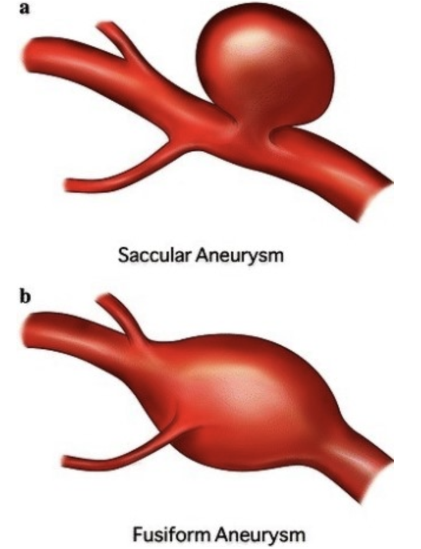
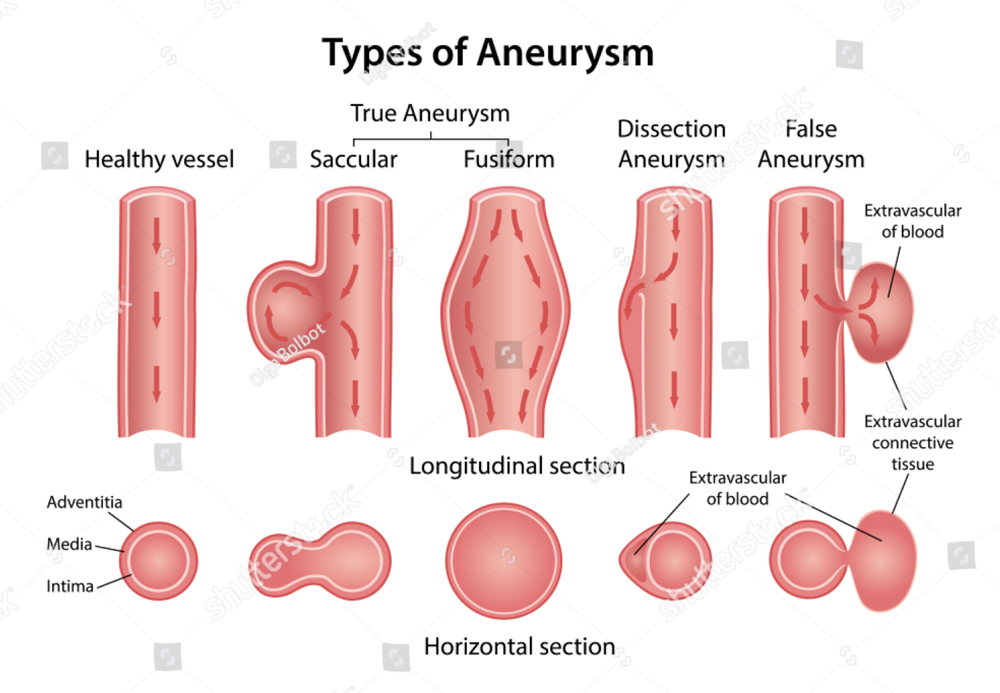

<!DOCTYPE html>
<html lang="ko">
<head>
  <meta charset="utf-8">
  <meta name="viewport" content="width=device-width, initial-scale=1">
  <title>[Cardiovascular disease] Aneurysm _ part1 | Sehyeog Kim</title>
  <link rel="stylesheet" href="../../../../assets/css/style.css">
</head>
<body>
  <header class="mobile-header">
    <span class="site-title">Sehyeog Kim</span>
    <button class="menu-toggle" aria-label="Menu">&#9776;</button>
  </header>
  <div class="sidebar-overlay"></div>

  <div class="site-wrapper">
    <aside class="sidebar">
      <div class="sidebar-bg">
        
      </div>
      <div class="sidebar-profile">
        
        <h1 class="profile-name">Sehyeog Kim</h1>
        <p class="profile-bio">AI &amp; Computational Engineering<br>Personal Blog</p>
        <div class="profile-links">
          <a href="https://github.com/Sehyeogkim" target="_blank" rel="noopener">
            <svg viewBox="0 0 16 16" width="15" height="15" fill="currentColor"><path d="M8 0C3.58 0 0 3.58 0 8c0 3.54 2.29 6.53 5.47 7.59.4.07.55-.17.55-.38 0-.19-.01-.82-.01-1.49-2.01.37-2.53-.49-2.69-.94-.09-.23-.48-.94-.82-1.13-.28-.15-.68-.52-.01-.53.63-.01 1.08.58 1.23.82.72 1.21 1.87.87 2.33.66.07-.52.28-.87.51-1.07-1.78-.2-3.64-.89-3.64-3.95 0-.87.31-1.59.82-2.15-.08-.2-.36-1.02.08-2.12 0 0 .67-.21 2.2.82.64-.18 1.32-.27 2-.27.68 0 1.36.09 2 .27 1.53-1.04 2.2-.82 2.2-.82.44 1.1.16 1.92.08 2.12.51.56.82 1.27.82 2.15 0 3.07-1.87 3.75-3.65 3.95.29.25.54.73.54 1.48 0 1.07-.01 1.93-.01 2.2 0 .21.15.46.55.38A8.013 8.013 0 0016 8c0-4.42-3.58-8-8-8z"/></svg> GitHub
          </a>
        </div>
      </div>
      <nav class="sidebar-nav">
        <a href="/" class="nav-item nav-home">Home</a>
        <span class="nav-group-label">AI</span>
        <a href="/blog/ai/agentic-ai-theory/" class="nav-item">Agentic_AI_Theory<span class="nav-post-count">8</span></a>
        <a href="/blog/ai/deep-learning/" class="nav-item">Deep-learning<span class="nav-post-count">14</span></a>
        <a href="/blog/ai/machine-learning/" class="nav-item">Machine_Learning<span class="nav-post-count">11</span></a>
        <a href="/blog/ai/sensitivity-analysis/" class="nav-item">Sensitivity_Analysis<span class="nav-post-count">3</span></a>
        <span class="nav-group-label">BioMechanics</span>
        <a href="/blog/biomechanics/blood-flow-and-metabolism/" class="nav-item">Blood-Flow-and-Metabolism<span class="nav-post-count">12</span></a>
        <a href="/blog/biomechanics/cardiovascular-diseases/" class="nav-item active">CardioVascular_Diseases<span class="nav-post-count">8</span></a>
        <span class="nav-group-label">Mechanical_Engineering</span>
        <a href="/blog/mechanical-engineering/computational-linear-algebra/" class="nav-item">Computational-Linear-Algebra<span class="nav-post-count">15</span></a>
        <a href="/blog/mechanical-engineering/computational-fluid-dynamics/" class="nav-item">Computational_Fluid_Dynamics<span class="nav-post-count">14</span></a>
        <a href="/blog/mechanical-engineering/continuum-mechanics/" class="nav-item">Continuum-Mechanics<span class="nav-post-count">9</span></a>
        <a href="/blog/mechanical-engineering/engineering-mathematics/" class="nav-item">Engineering_Mathematics<span class="nav-post-count">14</span></a>
        <a href="/blog/mechanical-engineering/finite-element-method/" class="nav-item">Finite-Element-Method<span class="nav-post-count">1</span></a>
        <a href="/blog/mechanical-engineering/fluid-mechanics/" class="nav-item">Fluid_Mechanics<span class="nav-post-count">18</span></a>
        <a href="/blog/mechanical-engineering/gas-dynamics/" class="nav-item">Gas_Dynamics<span class="nav-post-count">24</span></a>
        <a href="/blog/mechanical-engineering/heat-transfer/" class="nav-item">Heat-transfer<span class="nav-post-count">8</span></a>
        <a href="/blog/mechanical-engineering/solid-mechanics/" class="nav-item">Solid_Mechanics<span class="nav-post-count">25</span></a>
        <a href="/blog/mechanical-engineering/thermodynamics/" class="nav-item">Thermodynamics<span class="nav-post-count">14</span></a>
        <a href="/blog/mechanical-engineering/viscous-flow/" class="nav-item">Viscous_Flow<span class="nav-post-count">28</span></a>
      </nav>
    </aside>

    <main class="main-content">
      <div class="breadcrumb"><a href="/">Home</a><span class="sep">/</span><a href="/blog/biomechanics/">BioMechanics</a><span class="sep">/</span><a href="/blog/biomechanics/cardiovascular-diseases/">CardioVascular_Diseases</a><span class="sep">/</span><span>[Cardiovascular disease] Aneurysm _ part1</span></div>
<a href="/blog/biomechanics/cardiovascular-diseases/" class="back-link">&larr; Back to CardioVascular_Diseases</a>
<div class="page-header"><h1>[Cardiovascular disease] Aneurysm _ part1</h1></div>
<div class="post-meta"><span class="meta-item"><span class="meta-label">Date:</span> 2024-09-23</span><span class="meta-item"><span class="meta-label">Category:</span> CardioVascular_Diseases</span><span class="meta-item"><span class="meta-label">Source:</span> <a href="https://jeffdissel.tistory.com/m/89" target="_blank" rel="noopener">link</a></span></div>
<article class="post-content"><p>[Cardiovascular disease] Aneurysm _ part1<br />
이번 포스터는 새로운<br />
Cardiovascular disease인<br />
동맥류(Aneurysm)에 대해서 알아보자.<br />
1. aneurysm 이란?<br />
<br />
위 사진 처럼, 혈관의 벽이 부풀어 오른 상태를<br />
Aneurysm<br />
이라고 합니다.<br />
인체의 모든 동맥에서 일어날 수 있으며,<br />
일어나는 동맥의 위치에 따라서<br />
다음과 같이 분류 됩니다.<br />
복부 대동맥류 (Abdominal Aortic Aneurysm, AAA)<br />
: 전체 동맥류 중 75%<br />
뇌동맥류 (Cerebral Aneurysm) : <strong>15~20%</strong>의 발생률로, 파열 시 위험성 큼.<br />
흉부 대동맥류 (Thoracic Aortic Aneurysm, TAA)<br />
: 전체 동맥류 중 25% 비교적 드물지만 위험성 큼.<br />
말초 동맥류 (Peripheral Aneurysm)<br />
: 전체의<br />
5% 미만<br />
으로 드문 편.<br />
내장 동맥류 (Visceral Artery Aneurysm)<br />
: 매우 드물며, 전체의<br />
1% 이하<br />
발생.<br />
그 중에서, 저희는<br />
인류의 총 2-5% 가 발생하는<br />
뇌동맥류<br />
에 대해서<br />
알아보도록 하겠습니다.<br />
동맥류의 종류는 모양에 따라서, 다음과 같이 분류합니다.<br />
<br />
뇌동맥류가 굉장히 무서운 이유는,<br />
터지기 전까지.<br />
혹은 너무 커서 뇌의 신경을 건드려<br />
인체에 장애가 오기 전까지는<br />
존재사실 자체를 알 수 없다는 것.<br />
(환자중 20-30%만 터지기 전까지,<br />
존재사실을 확인한다)<br />
따라서,<br />
Saccular Cerebral Aneurysm<br />
같이 터질 확률이 높은<br />
뇌동맥류는 미리 조치를 취해야 한다.<br />
2. ansuerysm 발생이유.<br />
그렇다면, 동맥류가 왜 생기는 걸까?<br />
아직까지, 100% (이것)때문이다 라고<br />
밝혀진 것은 없다.<br />
하지만, 영향을 주는 인자로는<br />
다양한 factor가 존재<br />
1. 혈관 중막의 손상<br />
혈관의 벽의 중막에<br />
SMC(Smooth muscle cell)와 Elastin(탄성섬유)<br />
가 손상되어<br />
혈관 자체 탄성 상실<br />
-&gt; 혈관벽이 늘어남<br />
<br />
<br />
이전 포스터의 Plaque에서 언급 했다 싶이,<br />
고혈압<br />
흡연<br />
운동부족<br />
수면부족<br />
-&gt;<br />
세포벽 Inflammation(염증 반응)<br />
-&gt; SMC 손상,<br />
-&gt; Elastin 파괴<br />
-&gt; 혈관벽 느슨해짐(Remodeling)<br />
으로 이어집니다.<br />
2. 유전적 요인<br />
뿐만아니라, 대동맥류 가족력이 있는 경우<br />
일어날 확률이 크다는 연구 결과가 있습니다.<br />
(1) Marfan Syndrome<br />
Fibrillin-1 단백질의 돌연변이로 발생<br />
-&gt; Elastin 결합조직의 구조 장애 발생.<br />
(2) Ehlers-Danlos Syndrome<br />
Choleagen 생성 유전자에 결함<br />
-&gt; 대동맥 벽의 강도 감소<br />
-&gt; Aneruysm 발생 확률 높음.<br />
(3) Loeys-Dietz Syndrome<br />
TGF-beta 수용체 유전자의 돌연변이<br />
TGF-beta : 항염증 작용 -&gt; 염증반응을 억제<br />
따라서, 염증반응이 혈관벽에 자주 일어나며 이에 경우<br />
혈관벽의 손상 -&gt; 탄성력 잃음 -&gt; 대동맥류 발생 확률 증가<br />
3. Cerebral ansuerysm<br />
이제 우리의 관심사인,<br />
뇌대동맥류에 대해서 자세하게 알아보자.<br />
뇌 대동맥류 같은 경우<br />
대동맥류는 대부분<br />
Circle of Willis<br />
윌리스의 고리<br />
에서 발생한다.<br />
(뇌동맥류 뿐만아니라, 모든 대동맥류는<br />
혈액의 방향이 바뀌는 곳,<br />
분기점<br />
이 두가지 의 경우에서 자주 발생)<br />
<br />
위 사진에서 알 수 있듯이,<br />
혈액이 분기하는 지점이나<br />
방향이 전환되는 지점에서 자주 발생<br />
<br />
실제 MCA aneurysm 사진.</p></article>
      <footer class="site-footer">
        <p>&copy; 2026 Sehyeog Kim</p>
      </footer>
    </main>
  </div>
  <script src="../../../../assets/js/main.js"></script>
</body>
</html>